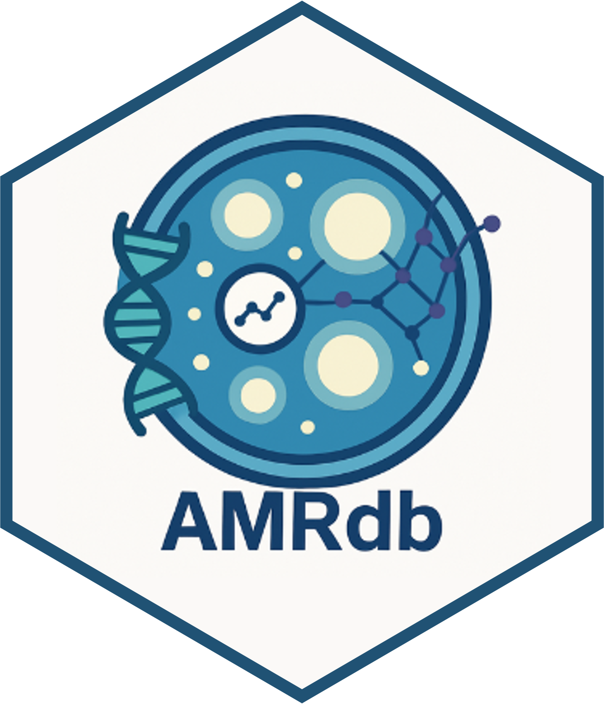

AMRdb 
The goal of AMRdb is to provide a curated, high-quality dataset that supports the analysis, visualization, and modeling of antimicrobial resistance (AMR). Specifically, AMRdb enables researchers and data scientists to:
Analyze outputs from Machine Learning and Deep Learning models, particularly those related to MIC (Minimum Inhibitory Concentration) predictions and phenotypic classification (Resistant, Intermediate, Susceptible).
Explore clinical and genomic metadata associated with microbial isolates.
Integrate structured data into reproducible workflows for computational AMR surveillance and comparative genomics.
Installation instructions
Get the latest stable R release from CRAN.
install.packages("AMRdb")To install the development version from Github use:
if (!requireNamespace("remotes", quietly = TRUE)) {
install.packages("remotes")
}
remotes::install_github("EveliaCoss/AMRdb")Or you can install AMRdb from Bioconductor using the following code:
if (!requireNamespace("BiocManager", quietly = TRUE)) {
install.packages("BiocManager")
}
BiocManager::install("AMRdb")And the development version from GitHub with:
BiocManager::install("EveliaCoss/AMRdb")About the data
The data included in this package are sourced from publicly available repositories such as the ENA browser, BV-BRC, and NCBI, offering a harmonized foundation for predictive modeling and downstream resistance profiling.
The AMRdb package contains X datasets:
library(palmerpenguins)
data(package = 'palmerpenguins')One is called antibiograms, and is a simplified version of the raw data; see ?antibiograms for more info:
head(penguins)
#> # A tibble: 6 × 8
#> species island bill_length_mm bill_depth_mm flipper_length_mm body_mass_g
#> <fct> <fct> <dbl> <dbl> <int> <int>
#> 1 Adelie Torgersen 39.1 18.7 181 3750
#> 2 Adelie Torgersen 39.5 17.4 186 3800
#> 3 Adelie Torgersen 40.3 18 195 3250
#> 4 Adelie Torgersen NA NA NA NA
#> 5 Adelie Torgersen 36.7 19.3 193 3450
#> 6 Adelie Torgersen 39.3 20.6 190 3650
#> # ℹ 2 more variables: sex <fct>, year <int>The second dataset is X, and contains all the variables and original names as downloaded; see ?penguins_raw for more info.
head(penguins_raw)
#> # A tibble: 6 × 17
#> studyName `Sample Number` Species Region Island Stage `Individual ID`
#> <chr> <dbl> <chr> <chr> <chr> <chr> <chr>
#> 1 PAL0708 1 Adelie Penguin … Anvers Torge… Adul… N1A1
#> 2 PAL0708 2 Adelie Penguin … Anvers Torge… Adul… N1A2
#> 3 PAL0708 3 Adelie Penguin … Anvers Torge… Adul… N2A1
#> 4 PAL0708 4 Adelie Penguin … Anvers Torge… Adul… N2A2
#> 5 PAL0708 5 Adelie Penguin … Anvers Torge… Adul… N3A1
#> 6 PAL0708 6 Adelie Penguin … Anvers Torge… Adul… N3A2
#> # ℹ 10 more variables: `Clutch Completion` <chr>, `Date Egg` <date>,
#> # `Culmen Length (mm)` <dbl>, `Culmen Depth (mm)` <dbl>,
#> # `Flipper Length (mm)` <dbl>, `Body Mass (g)` <dbl>, Sex <chr>,
#> # `Delta 15 N (o/oo)` <dbl>, `Delta 13 C (o/oo)` <dbl>, Comments <chr>Both datasets contain data for 344 penguins. There are 3 different species of penguins in this dataset, collected from 3 islands in the Palmer Archipelago, Antarctica.
str(penguins)
#> tibble [344 × 8] (S3: tbl_df/tbl/data.frame)
#> $ species : Factor w/ 3 levels "Adelie","Chinstrap",..: 1 1 1 1 1 1 1 1 1 1 ...
#> $ island : Factor w/ 3 levels "Biscoe","Dream",..: 3 3 3 3 3 3 3 3 3 3 ...
#> $ bill_length_mm : num [1:344] 39.1 39.5 40.3 NA 36.7 39.3 38.9 39.2 34.1 42 ...
#> $ bill_depth_mm : num [1:344] 18.7 17.4 18 NA 19.3 20.6 17.8 19.6 18.1 20.2 ...
#> $ flipper_length_mm: int [1:344] 181 186 195 NA 193 190 181 195 193 190 ...
#> $ body_mass_g : int [1:344] 3750 3800 3250 NA 3450 3650 3625 4675 3475 4250 ...
#> $ sex : Factor w/ 2 levels "female","male": 2 1 1 NA 1 2 1 2 NA NA ...
#> $ year : int [1:344] 2007 2007 2007 2007 2007 2007 2007 2007 2007 2007 ...Examples
You can find these and more code examples for exploring palmerpenguins in vignette("examples").
Citation
Below is the citation output from using citation('AMRdb') in R. Please run this yourself to check for any updates on how to cite AMRdb.
print(citation('AMRdb'), bibtex = TRUE)
#> To cite package 'AMRdb' in publications use:
#>
#> EveliaCoss (2025). _Mi articulo_. doi:10.18129/B9.bioc.AMRdb
#> <https://doi.org/10.18129/B9.bioc.AMRdb>,
#> https://github.com/EveliaCoss/AMRdb/AMRdb - R package version 0.1.0,
#> <http://www.bioconductor.org/packages/AMRdb>.
#>
#> A BibTeX entry for LaTeX users is
#>
#> @Manual{,
#> title = {Mi articulo},
#> author = {{EveliaCoss}},
#> year = {2025},
#> url = {http://www.bioconductor.org/packages/AMRdb},
#> note = {https://github.com/EveliaCoss/AMRdb/AMRdb - R package version 0.1.0},
#> doi = {10.18129/B9.bioc.AMRdb},
#> }
#>
#> EveliaCoss (2025). "Mi articulo." _bioRxiv_. doi:10.1101/TODO
#> <https://doi.org/10.1101/TODO>,
#> <https://www.biorxiv.org/content/10.1101/TODO>.
#>
#> A BibTeX entry for LaTeX users is
#>
#> @Article{,
#> title = {Mi articulo},
#> author = {{EveliaCoss}},
#> year = {2025},
#> journal = {bioRxiv},
#> doi = {10.1101/TODO},
#> url = {https://www.biorxiv.org/content/10.1101/TODO},
#> }Please note that the AMRdb was only made possible thanks to many other R and bioinformatics software authors, which are cited either in the vignettes and/or the paper(s) describing this package.
Code of Conduct
Please note that the AMRdb project is released with a Contributor Code of Conduct. By contributing to this project, you agree to abide by its terms.
This package was developed using biocthis.